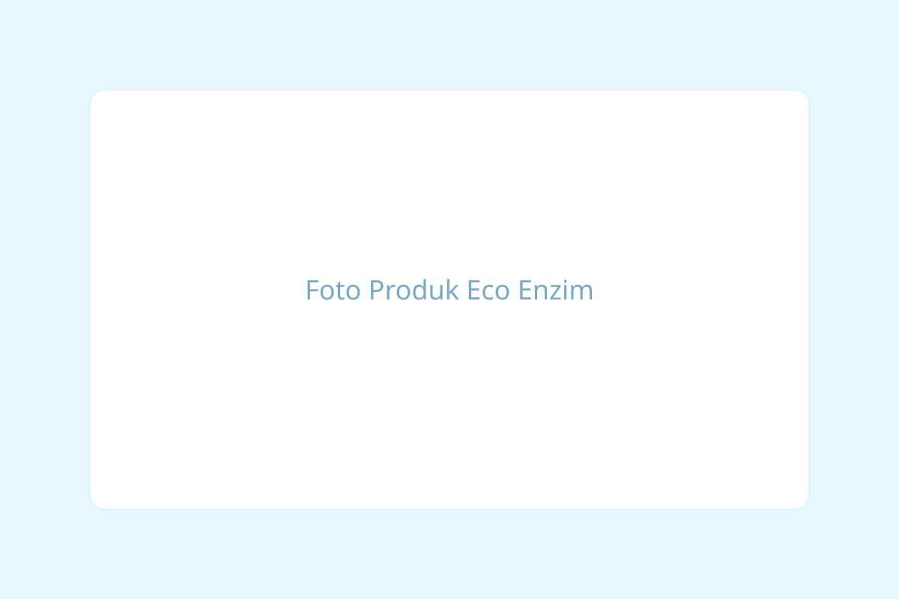
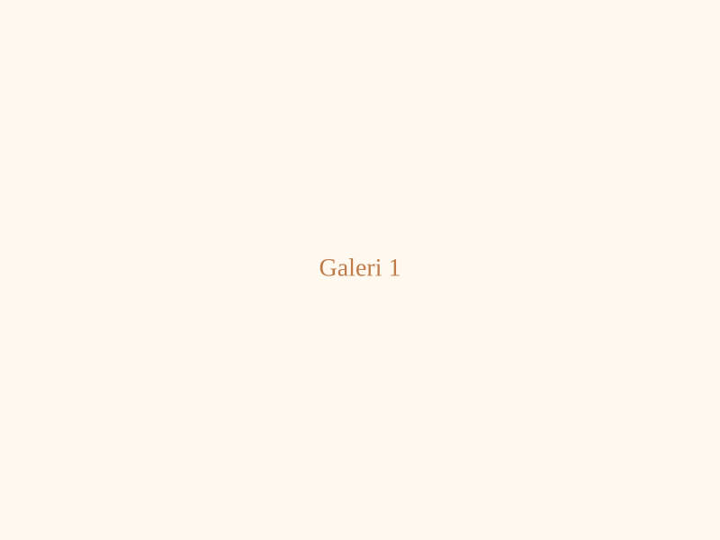
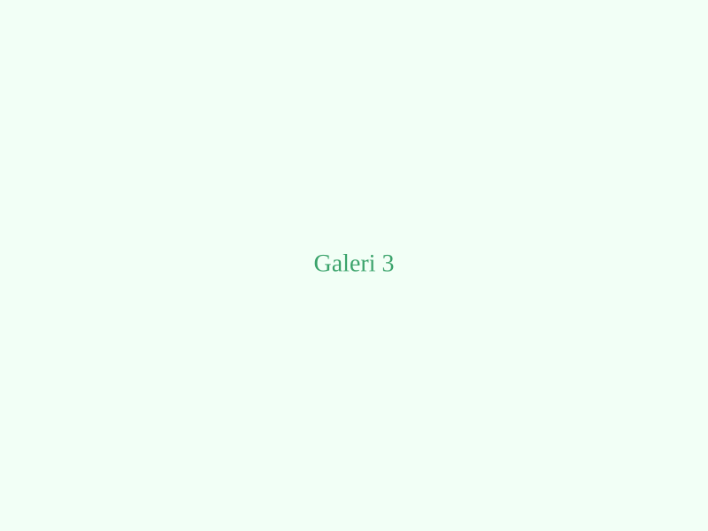

Tentang Eco Enzim
Eco enzim adalah cairan serbaguna yang dihasilkan dari fermentasi sisa sayur, buah, gula (molase), dan air. Produk buatan ibu-ibu Dusun Demangan ini berguna sebagai:
- Cairan pembersih ramah lingkungan
- Pupuk organik untuk tanaman
- Pengusir hama alami
Diproduksi secara gotong royong, aman untuk lingkungan, dan mudah dibuat di skala rumah tangga.

Foto produk Eco Enzim buatan ibu-ibu Dusun Demangan. Klik foto untuk mengganti dengan foto Anda.
Dibuat dari 100% Bahan Alami
Gula Merah / Molase
Berperan sebagai sumber makanan mikroba dalam fermentasi.
Sisa Sayur & Kulit Buah
Bahan organik yang difermentasi untuk menghasilkan enzim.
Air Bersih
Pelarut alami yang memfasilitasi proses fermentasi.
Rasio umum pembuatan: 1 : 3 : 10 (molase : bahan organik : air)
Proses Gotong Royong Warga Demangan



Klik foto untuk mengganti dengan foto dokumentasi Anda.
Program Pembagian GRATIS untuk Warga!
Produk ini siap dibagikan khusus untuk masyarakat dan ibu-ibu PKK Dusun Demangan.
Hubungi Pengurus PKK